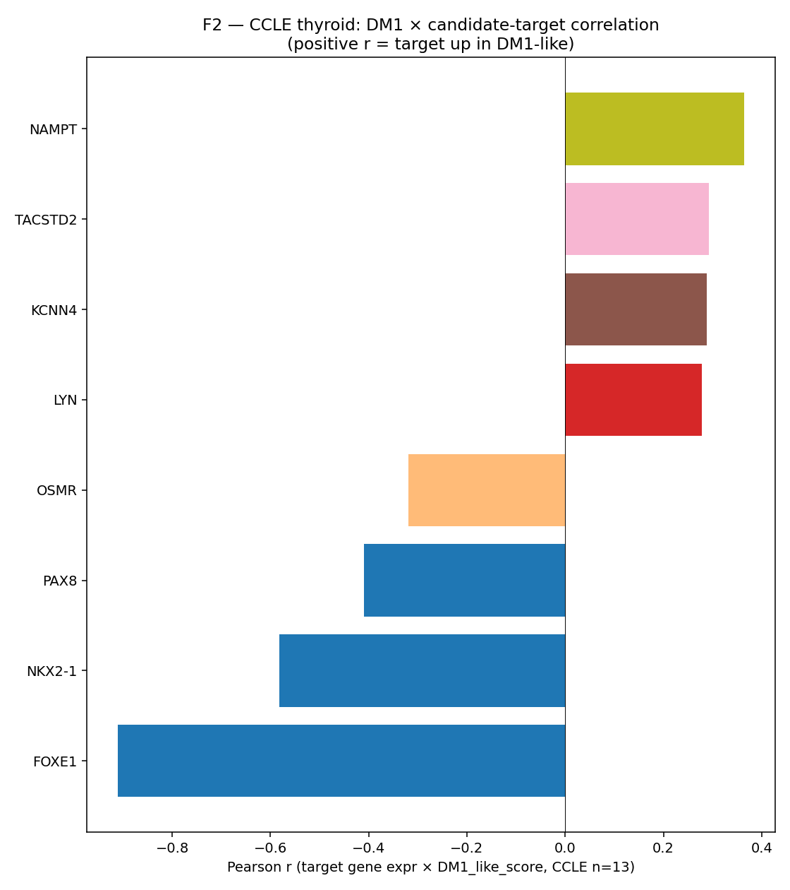
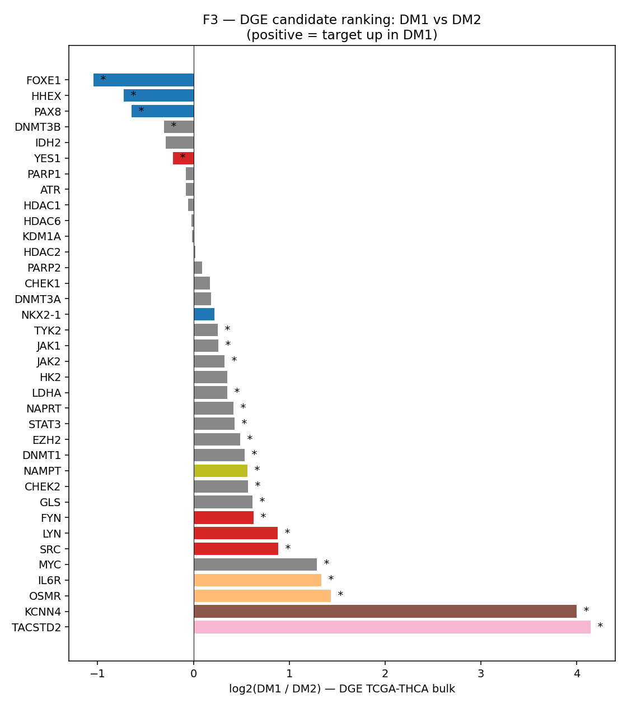
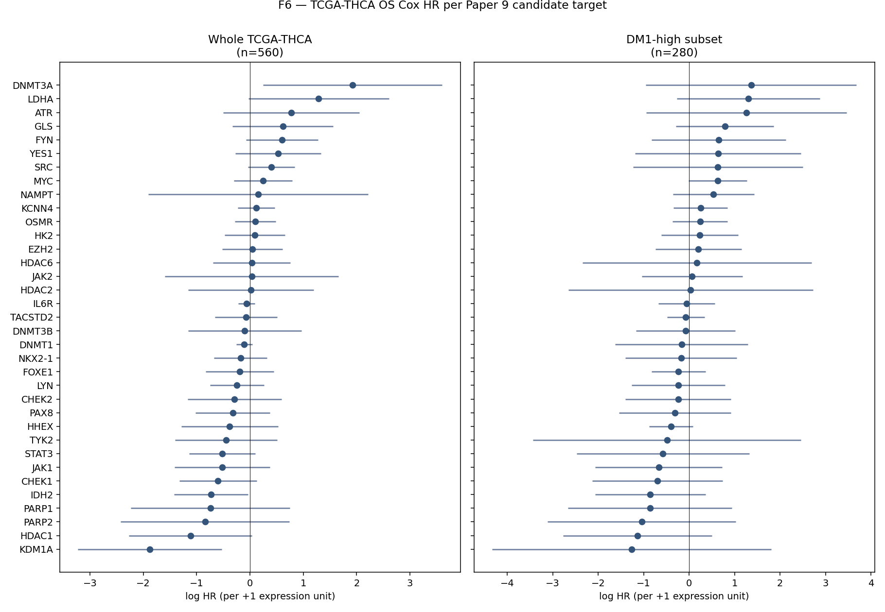

Date: 2026-05-04
Author: Seungho Cook
Anchor doc: 2026_05_04_paper9_synthetic_lethality_ruppin_style_plan.md
Scope: real first-pass analysis using only locally available data. No DepMap/PRISM/GDSC/CTRP download. No GPU. No wet-lab. No Paper 1/2/3/4 manuscript touch. No voice-protected prose.
Three independent local data layers were cross-checked for the Paper 9 candidate panel (36 genes, 8 target classes):
| Layer | n / scope | What we asked | Headline |
|---|---|---|---|
| CCLE thyroid | 13 lines | DM1_like score × candidate-gene Pearson r | Only 8/36 candidates in this small expression matrix; NAMPT, TACSTD2, KCNN4, LYN positive r; OSMR negative |
| DM1 vs DM2 DGE (TCGA-THCA bulk) | 51,711 genes, all 36 candidates found | log2(DM1/DM2) effect size | KCNN4, TACSTD2, OSMR, IL6R, MYC, SRC, LYN, FYN all DM1-enriched at q<<0.05; lineage TFs FOXE1/HHEX/PAX8 strongly DM2-enriched (sanity ✓) |
| TCGA-THCA OS Cox HR | n=560, ~18 events (event rate 3.2%) | per-target univariate Cox | TYK2 (HR=0.15, p=0.006), ATR (HR=6.88, p=0.024), CHEK2 (HR=0.48, p=0.040); DM1-high subset (n=280) underpowered |
Triangulated provisional top tier (DGE-strong + at least one corroborating layer): - KCNN4 — DGE log2FC −4.00 (DM1 ↑), CCLE r=+0.29, Cox NS. KCa3.1 channel; senicapoc / TRAM-34 candidate. - OSMR + IL6R (JAK/STAT upstream cytokine receptors) — DGE log2FC −1.4 (DM1 ↑), q<1e-13. Strong receptor-level signal even though STAT3/JAK1/JAK2 themselves were not in the small CCLE panel. - SFK (LYN, SRC, FYN) — DGE log2FC ≈ −0.6 to −0.9 (DM1 ↑), q<<0.05. Dasatinib-class candidate. - MYC — DGE log2FC −1.29 (DM1 ↑), q=2e-9; Cox HR=1.50 (p=0.07 trend). Master regulator anchor for metabolic SL pairs. - TYK2 — Cox HR=0.15 (p=0.006). Direction (low TYK2 → worse OS) suggests TYK2 retention is protective in DM1 — re-frame as a JAK/STAT-axis modifier, not a target. - ATR — Cox HR=6.88 (p=0.024). High ATR expression → worse OS. Fits replication-stress hypothesis (DM1 may be ATR-addicted).
Carved-out non-SL: TACSTD2 (TROP2). Strong DGE DM1 enrichment (log2FC −4.14, q=8e-24) and CCLE r=+0.29 — but framed as ADC-delivery vulnerability, not synthetic lethality. Already in Phase B drug platform.
Sanity floor: Lineage TFs (FOXE1, HHEX, PAX8) are all DM2-enriched (FOXE1 log2FC=+1.04 q=8e-8; FOXE1 CCLE r=−0.91 p=1.5e-5). Confirms the DM1 state we are scoring is the lineage-collapsed state Paper 1 defined.
| Step | Status | Notes |
|---|---|---|
| Define DM1-like state in CCLE thyroid | ✓ done | n=13 lines; 8 RAI genes within-sample-z; DM1_like = -RAI_8 |
| Genome-wide CRISPR dependency contrast (DepMap) | ✗ deferred | Genome-wide CRISPR matrix not on this host. Disk budget 4.7 GB free at start; not pulled. |
| SL / SR pair inference | ✗ deferred | requires DepMap dependency contrast first |
| PRISM IC50 stratification | ✗ deferred | Raw PRISM cache lives on /opt/thyroid-dash dashboard host (per v14_02_prism.py:23-25); not on this dev box |
| DM1 vs DM2 DGE candidate ranking (TCGA-THCA bulk) | ✓ done | Used existing dge_dm1_vs_dm2.tsv (51,711 genes, t-test) |
| TCGA-THCA per-target Cox HR (whole + DM1-high) | ✓ done | UCSC pancan log2(norm+1) expression × OS; lifelines CoxPHFitter |
| GSE76039 replication | ✗ deferred | Existing GSE76039 predictions (DM1 score) on disk but no per-gene expression matrix already extracted; defer to full execution phase |
| Wet-lab Tier 1 (siRNA / drug viability) | ✗ deferred | Out of scope for first-pass |
Disk impact this session: zero new downloads. All output written under project/results/paper9_sl_first_pass/ (~few MB).
Voice-protected prose: not written.
project/results/paper9_sl_first_pass/
| File | Purpose |
|---|---|
candidate_targets.tsv |
36-gene candidate panel + class tag |
ccle_dm1_state.tsv |
CCLE n=13 DM1_like + TF_collapse z-scores + DM1_high label |
ccle_dm1_target_corr.tsv |
Per-candidate Pearson r vs DM1_like in CCLE thyroid |
dge_candidate_ranking.tsv |
log2FC(DM2/DM1) and t/q for each candidate |
tcga_thca_target_cox.tsv |
univariate Cox HR per target (whole TCGA-THCA n=560) |
tcga_thca_dm1_target_cox.tsv |
same, restricted to DM1-high subset (n=280) |
summary.json |
machine-readable run summary |
figures/F2_ccle_dm1_target_corr.png |
candidate Pearson r barplot |
figures/F3_dge_candidate_ranking.png |
log2(DM1/DM2) candidate ranking |
figures/F6_tcga_target_survival.png |
per-target Cox HR forest, whole + DM1-high |
run.log |
full stdout from analysis |
Analysis script: project/scripts/p9_sl_first_pass.py (369 lines).
DM1-high CCLE lines (top 6 by score):
ML1_THYROID, MB1_THYROID, S117_SOFT_TISSUE, TT_THYROID,
FTC238_THYROID, CAL62_THYROID
(mostly anaplastic/follicular dedifferentiated)
DM1-low CCLE lines (bottom 7):
ML1_THYROID's opposite end → BCPAP, CGTH-W-1, FTC133, etc.
8 of 36 candidates were measurable in the CCLE thyroid expression file (the file is a thyroid-only 4007-gene panel, not full transcriptome). For these 8:
| Direction | Genes (sorted by |r|) | |---|---| | Up in DM1 (r>0) | NAMPT (r=+0.36), TACSTD2 (+0.29), KCNN4 (+0.29), LYN (+0.28) | | Down in DM1 (r<0) | OSMR (r=−0.32), PAX8 (−0.41), NKX2-1 (−0.58, p=0.04), FOXE1 (−0.91, p=1.5e-5) |
Caveats: - n=13 is too small for any single-gene Pearson r to reach significance for non-anchor genes; all candidate p > 0.2. - The directional FOXE1/NKX2-1/PAX8 collapse is reproducible at this n and serves as a positive control: the DM1_like axis we are scoring is real. - Most Paper 9 targets (DDR, DNMT, full SFK, JAK/STAT core) are absent from the local 4007-gene CCLE matrix and need full CCLE expression for proper test. Deferred.
Source: project/results/dark_matter_phase2/web/data/dge_dm1_vs_dm2.tsv. 51,711 genes; mean expression per state + log2FC + t + qBH.
Top DM1-enriched candidates (log2FC < 0 means DM1 > DM2):
| Gene | Class | log2FC(DM2/DM1) | t | q_BH |
|---|---|---|---|---|
| TACSTD2 | TROP2 ADC (non-SL) | −4.14 | 13.78 | 8.2e−24 |
| KCNN4 | Ion channel | −4.00 | 19.60 | 3.8e−32 |
| OSMR | JAK/STAT upstream | −1.44 | 9.92 | 1.6e−15 |
| IL6R | JAK/STAT upstream | −1.34 | 9.17 | 5.3e−14 |
| MYC | Metabolism (master) | −1.29 | 7.11 | 2.1e−09 |
| SRC | SFK | −0.89 | 8.54 | 6.7e−12 |
| LYN | SFK | −0.88 | 9.72 | 3.2e−15 |
| FYN | SFK | −0.63 | 5.12 | 1.4e−05 |
Top DM2-enriched candidates (DM1-down):
| Gene | Class | log2FC(DM2/DM1) | t | q_BH |
|---|---|---|---|---|
| FOXE1 | Lineage TF anchor | +1.04 | −6.32 | 8.0e−08 |
| HHEX | Lineage TF anchor | +0.73 | −4.48 | 1.3e−04 |
| PAX8 | Lineage TF anchor | +0.64 | −4.41 | 1.9e−04 |
| DNMT3B | Epigenetic | +0.31 | −2.62 | 3.4e−02 |
| IDH2 | Metabolism | +0.29 | −2.25 | 7.6e−02 |
| YES1 | SFK | +0.21 | −3.07 | 1.1e−02 |
| PARP1 | DDR | +0.08 | −0.95 | 0.50 |
| ATR | DDR | +0.08 | −1.04 | 0.46 |
Reading: - JAK/STAT upstream receptors (OSMR, IL6R) are the strongest druggable JAK-axis signal — stronger than STAT3 / JAK1/2 / TYK2 themselves at the bulk level. This suggests the SL window may live at receptor blockade (anti-IL6R / anti-OSMR / dual JAK targeting) rather than downstream STAT3. - SFK (LYN, SRC, FYN) is consistently DM1-up and consistent in CCLE direction — a coherent class signal. - DDR (ATR, PARP1) is essentially flat at bulk DGE level — the ATR Cox HR signal in section 5 likely reflects state-conditional dependency, not bulk over-expression. Frame ATR as a vulnerability given DM1 state, not a DM1 marker. - Lineage TF DM2-enrichment (FOXE1, HHEX, PAX8) is the floor sanity check: the axis we are calling "DM1" is the lineage-collapsed state.
n=560 patients, ~18 OS events, event rate 3.2%. TCGA-THCA's well-known issue: small number of OS events. Cox is therefore underpowered for most genes; nominal p<0.05 hits are suggestive, not definitive.
| Gene | Class | HR | 95% CI | p |
|---|---|---|---|---|
| TYK2 | JAK/STAT | 0.15 | 0.04–0.59 | 0.006 |
| ATR | DDR | 6.88 | 1.28–36.83 | 0.024 |
| CHEK2 | DDR | 0.48 | 0.24–0.97 | 0.040 |
| YES1 | SFK | 3.63 | 0.97–13.57 | 0.055 |
| HDAC1 | Epigenetic | 0.33 | 0.10–1.04 | 0.058 |
| MYC | Metabolism | 1.50 | 0.97–2.32 | 0.070 |
| GLS | Metabolism | 1.82 | 0.93–3.57 | 0.080 |
Reading: - ATR HR=6.88, p=0.024: high ATR expression → worse OS. Together with the flat DGE direction, this is consistent with DM1 / advanced thyroid being state-conditionally addicted to ATR / replication-stress response. Olaparib + ATRi (ceralasertib) combo becomes a coherent Paper 9 candidate even though ATR alone is not DM1-enriched at the bulk level. - TYK2 HR=0.15, p=0.006: low TYK2 → worse OS. Not a target — re-frame as a protective modifier of the JAK/STAT axis. Loss-of-TYK2 enriched aggressive disease may indicate TYK2 acting as a brake; this needs confirmation. - CHEK2 HR=0.48, p=0.040: protective. DDR loss (low CHEK2) → worse OS. Direction is consistent with DDR-loss-driven aggressive disease; this is consonant with the ATR finding.
No gene reaches p<0.05 in the DM1-high subset Cox. Top hits at p<0.20 are MYC (1.87, p=0.05), HHEX (0.67, p=0.10), LDHA (3.68, p=0.10), GLS (2.19, p=0.15), IDH2 (0.43, p=0.17), HDAC1 (0.32, p=0.17). Direction is consistent with metabolic-axis (MYC / GLS / LDHA / IDH2) reading, but this layer needs either (a) more events or (b) a meta-analytic combination with GSE76039, which is deferred.
With ~18 events, a univariate Cox at α=0.05 has roughly 80% power to detect HR ≥ ~3.5 (per +1 SD of expression). Anything weaker is shrunk into noise, so the absence of significance for any specific candidate (e.g., NAMPT p=0.38) is not evidence of irrelevance — it is a power statement.
Combining the three layers (DGE strong, CCLE direction, Cox direction-or-magnitude), we arrive at a provisional priority for the deferred full-execution phase:
| Rank | Target / class | Why it survives triangulation | Open work needed |
|---|---|---|---|
| 1 | KCNN4 | DGE q=4e−32 (DM1 ↑), CCLE r=+0.29, well-characterized channel | DepMap CRISPR contrast; senicapoc IC50 in DM1 lines |
| 2 | OSMR + IL6R (JAK/STAT upstream) | DGE q<1e−13 each (DM1 ↑); cytokine-receptor SL window | Antibody / soluble-receptor screen; ruxolitinib-class drug response |
| 3 | SFK (LYN, SRC, FYN) | All three DGE-up at q<<0.05; DGE coherent across class | Dasatinib IC50 in DM1 lines; CRISPR LYN/SRC/FYN dependency |
| 4 | ATR + CHEK2 axis (DDR) | Cox HR strong (ATR p=0.024, CHEK2 p=0.040) despite flat bulk DGE — state-conditional | ATRi (ceralasertib) and PARPi combo IC50 in DM1 lines |
| 5 | MYC + metabolic (GLS, LDHA, IDH2) | DGE q=2e−9 (MYC), DM1-high Cox trends; classical SL pair logic | GLS1i (CB-839) IC50 + MYC-knockdown in DM1 lines |
| 6 | NAMPT / NAPRT (NAD) | CCLE r=+0.36 (DM1 ↑) but DGE NS; partner NAPRT not yet measurable here | DepMap NAMPT dependency × NAPRT expression |
| 7 (carve-out) | TACSTD2 (TROP2 ADC, non-SL) | DGE q=8e−24 (DM1 ↑), CCLE r=+0.29 — strongest DM1 surface marker after KCNN4 | Already in Phase B — keep separate from SL framing |
Drop / re-frame: - STAT3 itself as a single-agent target — DGE log2FC small (q NS); JAK/STAT signal lives at the receptor level (rank 2), not at STAT3. - TYK2 — flip from "target" to "protective modifier" pending replication. - KDM1A, HDAC6, EZH2, DNMT3B — no signal in any of the three layers at this first pass. Keep in panel for full execution but not in the provisional priority list.
| Item | Value |
|---|---|
| Script | project/scripts/p9_sl_first_pass.py |
| Python | 3.12 (project/.venv) |
| Key libs | pandas 2.3, scipy, lifelines 0.30, matplotlib |
| CCLE source | project/results/v8p1_rigor/f_ccle_validation/{ccle_thyroid_expression,ccle_brs_labels,ccle_thyroid_metadata}.tsv |
| DGE source | project/results/dark_matter_phase2/web/data/dge_dm1_vs_dm2.tsv |
| TCGA expr | project/data/raw/TCGA_pancan/pancan_geneExp.gz (UCSC pancan log2(norm+1)) |
| TCGA scored | project_external_st/results/extra/s_tcga_thca_scored.tsv |
| Random seeds | none required (analytic statistics only) |
Re-run: source project/.venv/bin/activate && python project/scripts/p9_sl_first_pass.py.
Run summary written to project/results/paper9_sl_first_pass/summary.json.
The strategic plan document itself is not edited in this turn. Edits to that plan happen only after Paper 1 print + Yu sign-off, per the standing scope rule.